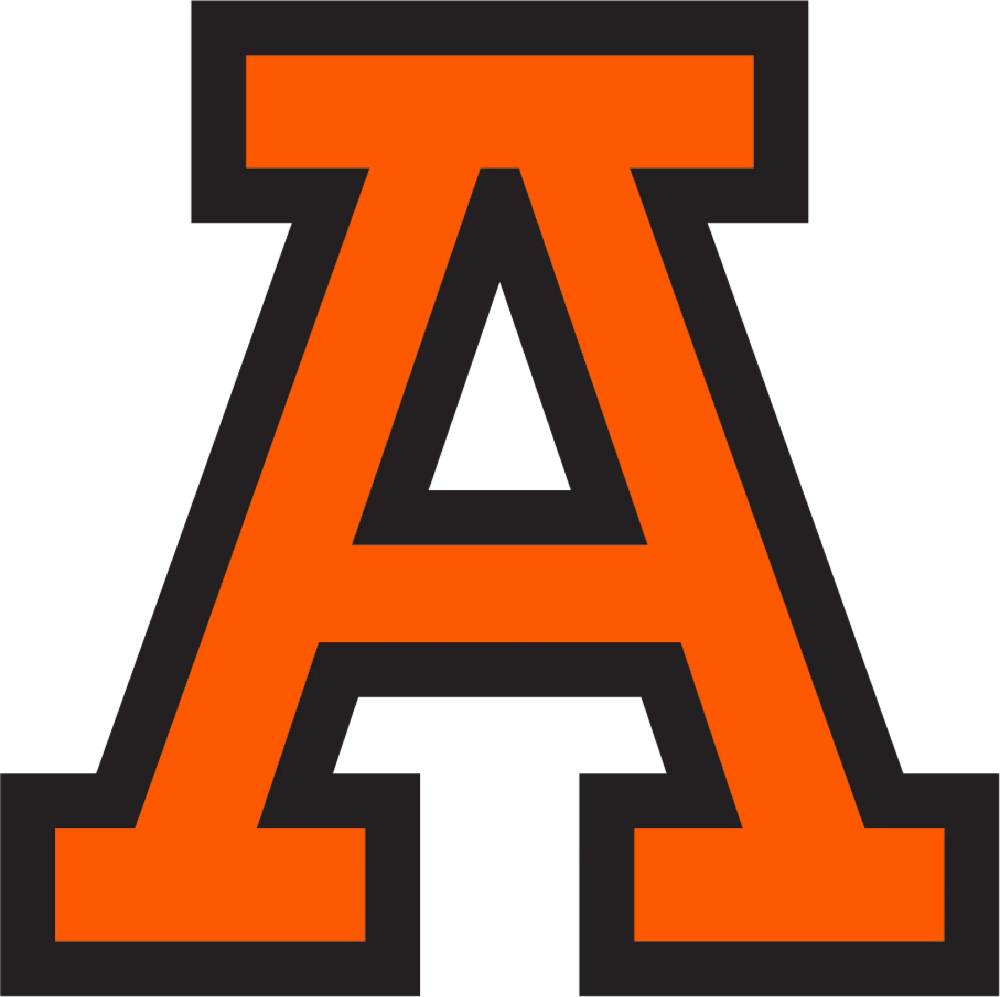

Semana Ford Anáhuac


Ford es una empresa con más de 100 años de historia y presencia ininterrumpida en México, abarcando áreas críticas como: diseño, manufactura e innovación, todas ellas impulsadas por el talento mexicano. Los invitamos a participar en la "Semana Ford - Anahuac 2026", un evento exclusivo diseñado pensando en ustedes, que se llevará a cabo en las instalaciones de nuestra querida universidad. A continuación se detalla el programa con la fecha, hora e información de los ponentes invitados.
Nota: si estás interesado en participar en las actividades de acércate a tu Coordinador de Carrera.
Inauguración
10:00 - 11:30
Cultura Ford
11:30 - 13:00
Taller de Marketing digital con IA
13:00 - 14:30
Show Time - Company Cars
14:30 - 16:00
Industria Automotriz y las tendencias que vienen
16:00 - 17:30
¿Cómo se diseña un automóvil?
10:00 - 11:30
Coffee sesión con egresado
11:30 - 13:00
Taller de Caso
13:00 - 14:30
Show Time - Company Cars
14:30 - 16:00
Inteligencia Artificial en vehículos
16:00 - 17:30
CV y entrevistas
10:00 - 11:30
IA en el sector automotriz financiero
11:30 - 13:00
Taller de Jeopardy
13:00 - 14:30
Show Time - Company Cars
14:30 - 16:00
Egresados y su experiencia en Ford
16:00 - 17:30
Audiencia:
Ubicación:
Hora: